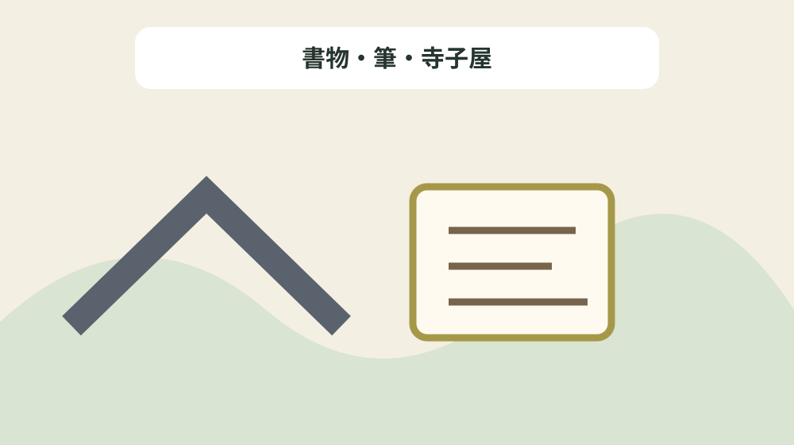
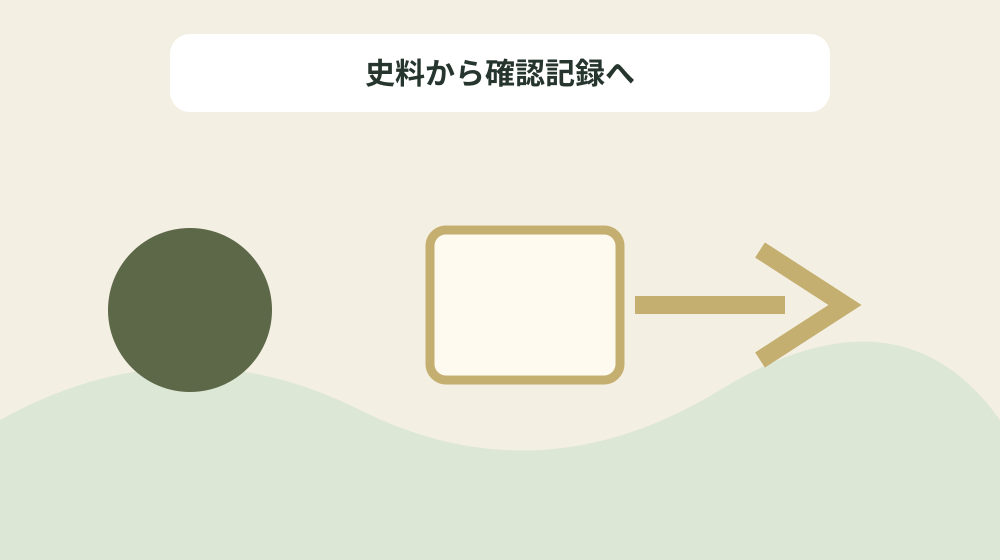

近世森の学芸を人物・著作・寺子屋・所蔵先で引く
結論：人物名、著作、教育の場、資料所蔵を一件ずつ結ぶことで、資料の記載と現在の状態を混同しない近世学芸書誌カードになります。
近世学芸書誌カードで解く問い
森町公式資料には「重年の著『 長歌詞珠衣 ( ながうたことばのたまぎぬ ) 』は今日なお、学界の評価が高い。」と記されています。近世森の学芸を人物・著作・寺子屋・所蔵先で引くでは、この記載を近世学芸書誌カードの一行にし、人物名、著作、教育の場、資料所蔵を一件ずつ結ぶための根拠として扱います。資料名と確認日を先に書き、後から説明だけが独り歩きしないようにします。
同じページで確認できる「明治から大正にかけては、範士奥村久忠の三河系印西派の跡を継いだ天宮の河合治明(はるあき)の活躍がめざましく、その余韻は現在に及んでいる。」は、前の事実と似ていても別の対象です。書物・筆・寺子屋を読み解くときは、資料の掲載順ではなく、名称・年代・場所・根拠の対応を見ます。写真、家族の記憶、公的資料を三列に分け、食い違いを未確認として残します。
近世学芸書誌カードでは「雪中庵 蓼太 ( りょうた ) は森の 蓼主 ( たでぬし ) 、其時雨(以席)、菊平と江戸で歌仙を巻いたが、この3人は雪門の 弘布 ( ぐふ ) で活躍した。」の確認欄と「堀尾房守短冊。(森町天宮 個人所蔵)」の照会欄を分けます。公式本文が述べていない現況や公開可否は未確認と書き、家族の記憶には話者と聞取日を添えます。旧記録を消さず、回答日と確認先を付けた新しい行を追加します。
公式本文から確定できる十二事実
森町公式資料には「弓は武士以外は禁じられていたが、駿・遠・参の3か国に限って公認されていたので、名主などの有力階層に普及した。」と記されています。近世森の学芸を人物・著作・寺子屋・所蔵先で引くでは、この記載を近世学芸書誌カードの一行にし、人物名、著作、教育の場、資料所蔵を一件ずつ結ぶための根拠として扱います。主語と対象を原文へ戻し、似た地名や人物を同じものとして扱いません。
同じページで確認できる「(7)三嶋神社奉納額。雪中庵完来・山中菊平・作笠・北嶋呉春の俳句が刻まれている。 完来の発句 「蓬莱とたてり神代の森若葉」 (森町森 三嶋神社所蔵)」は、前の事実と似ていても別の対象です。書物・筆・寺子屋を読み解くときは、資料の掲載順ではなく、名称・年代・場所・根拠の対応を見ます。資料の利点は典拠へ戻れることにあり、現在の状態を保証するものではありません。
近世学芸書誌カードでは「明治から大正にかけては、範士奥村久忠の三河系印西派の跡を継いだ天宮の河合治明(はるあき)の活躍がめざましく、その余韻は現在に及んでいる。」の確認欄と「(8)岡野如圭短冊。(森町森 個人所蔵))」の照会欄を分けます。公式本文が述べていない現況や公開可否は未確認と書き、家族の記憶には話者と聞取日を添えます。不動産の道路、境界、登記、建物安全性は、この歴史資料とは別に調べます。
近世学芸書誌カードの列を決める
森町公式資料には「堀尾房守短冊。(森町天宮 個人所蔵)」と記されています。近世森の学芸を人物・著作・寺子屋・所蔵先で引くでは、この記載を近世学芸書誌カードの一行にし、人物名、著作、教育の場、資料所蔵を一件ずつ結ぶための根拠として扱います。年号の横へ出来事を示す動詞を残し、制作年と伝来年を一つにしません。
同じページで確認できる「弓は武士以外は禁じられていたが、駿・遠・参の3か国に限って公認されていたので、名主などの有力階層に普及した。」は、前の事実と似ていても別の対象です。書物・筆・寺子屋を読み解くときは、資料の掲載順ではなく、名称・年代・場所・根拠の対応を見ます。不足する情報を空欄の理由として残し、推測で表を完成させません。
近世学芸書誌カードでは「小國重年短冊。(森町天宮 個人所蔵)」の確認欄と「流派は日置流印西派(へきりゅういんさいは)で、江戸前期に牛飼村の寺田作左衛門が吉田如玄(じょげん)から弓許状(ゆみきょじょう)を伝授されて以来、累代弓の師家として多くの門弟を育て、その門から草ヶ谷村の小澤治重(はるしげ)を出した。」の照会欄を分けます。公式本文が述べていない現況や公開可否は未確認と書き、家族の記憶には話者と聞取日を添えます。まだ売ると決めていない段階でも、資料の所在と根拠を家族で共有できます。

年代の種類を動詞で分ける
森町公式資料には「(4)小國重年の歌格研究書 「長歌言葉珠衣」。(森町一宮 小國神社所蔵)」と記されています。近世森の学芸を人物・著作・寺子屋・所蔵先で引くでは、この記載を近世学芸書誌カードの一行にし、人物名、著作、教育の場、資料所蔵を一件ずつ結ぶための根拠として扱います。所在地が示されても見学可能とは限らないため、公開条件を別に確認します。
同じページで確認できる「小國重年短冊。(森町天宮 個人所蔵)」は、前の事実と似ていても別の対象です。書物・筆・寺子屋を読み解くときは、資料の掲載順ではなく、名称・年代・場所・根拠の対応を見ます。問い合わせは対象名、参照ページ、確認済みの事実、知りたい一点に絞ります。
近世学芸書誌カードでは「(8)岡野如圭短冊。(森町森 個人所蔵))」の確認欄と「(4)小國重年の歌格研究書 「長歌言葉珠衣」。(森町一宮 小國神社所蔵)」の照会欄を分けます。公式本文が述べていない現況や公開可否は未確認と書き、家族の記憶には話者と聞取日を添えます。最初の一行から始め、十二事実を同時に確定しようとしないことが継続の要点です。
場所・所蔵・公開条件を混同しない
森町公式資料には「重年の著『 長歌詞珠衣 ( ながうたことばのたまぎぬ ) 』は今日なお、学界の評価が高い。」と記されています。近世森の学芸を人物・著作・寺子屋・所蔵先で引くでは、この記載を近世学芸書誌カードの一行にし、人物名、著作、教育の場、資料所蔵を一件ずつ結ぶための根拠として扱います。写真、家族の記憶、公的資料を三列に分け、食い違いを未確認として残します。
同じページで確認できる「中村 豊足 ( とよたり ) 、小國 重友 ( しげとも ) 、新貝 直蔭 ( なおかげ ) が主な門人で、その余脈は現代まで続いた。」は、前の事実と似ていても別の対象です。書物・筆・寺子屋を読み解くときは、資料の掲載順ではなく、名称・年代・場所・根拠の対応を見ます。旧記録を消さず、回答日と確認先を付けた新しい行を追加します。
近世学芸書誌カードでは「雪中庵 蓼太 ( りょうた ) は森の 蓼主 ( たでぬし ) 、其時雨(以席)、菊平と江戸で歌仙を巻いたが、この3人は雪門の 弘布 ( ぐふ ) で活躍した。」の確認欄と「雪中庵 蓼太 ( りょうた ) は森の 蓼主 ( たでぬし ) 、其時雨(以席)、菊平と江戸で歌仙を巻いたが、この3人は雪門の 弘布 ( ぐふ ) で活躍した。」の照会欄を分けます。公式本文が述べていない現況や公開可否は未確認と書き、家族の記憶には話者と聞取日を添えます。資料名と確認日を先に書き、後から説明だけが独り歩きしないようにします。
良い点
森町公式資料には「弓は武士以外は禁じられていたが、駿・遠・参の3か国に限って公認されていたので、名主などの有力階層に普及した。」と記されています。近世森の学芸を人物・著作・寺子屋・所蔵先で引くでは、この記載を近世学芸書誌カードの一行にし、人物名、著作、教育の場、資料所蔵を一件ずつ結ぶための根拠として扱います。資料の利点は典拠へ戻れることにあり、現在の状態を保証するものではありません。
同じページで確認できる「堀尾房守短冊。(森町天宮 個人所蔵)」は、前の事実と似ていても別の対象です。書物・筆・寺子屋を読み解くときは、資料の掲載順ではなく、名称・年代・場所・根拠の対応を見ます。不動産の道路、境界、登記、建物安全性は、この歴史資料とは別に調べます。
近世学芸書誌カードでは「明治から大正にかけては、範士奥村久忠の三河系印西派の跡を継いだ天宮の河合治明(はるあき)の活躍がめざましく、その余韻は現在に及んでいる。」の確認欄と「中村乗高短冊。(森町天宮 個人所蔵)」の照会欄を分けます。公式本文が述べていない現況や公開可否は未確認と書き、家族の記憶には話者と聞取日を添えます。主語と対象を原文へ戻し、似た地名や人物を同じものとして扱いません。
注文したい点
森町公式資料には「堀尾房守短冊。(森町天宮 個人所蔵)」と記されています。近世森の学芸を人物・著作・寺子屋・所蔵先で引くでは、この記載を近世学芸書誌カードの一行にし、人物名、著作、教育の場、資料所蔵を一件ずつ結ぶための根拠として扱います。不足する情報を空欄の理由として残し、推測で表を完成させません。
同じページで確認できる「(8)岡野如圭短冊。(森町森 個人所蔵))」は、前の事実と似ていても別の対象です。書物・筆・寺子屋を読み解くときは、資料の掲載順ではなく、名称・年代・場所・根拠の対応を見ます。まだ売ると決めていない段階でも、資料の所在と根拠を家族で共有できます。
近世学芸書誌カードでは「小國重年短冊。(森町天宮 個人所蔵)」の確認欄と「重年の著『 長歌詞珠衣 ( ながうたことばのたまぎぬ ) 』は今日なお、学界の評価が高い。」の照会欄を分けます。公式本文が述べていない現況や公開可否は未確認と書き、家族の記憶には話者と聞取日を添えます。年号の横へ出来事を示す動詞を残し、制作年と伝来年を一つにしません。
対案・結論
森町公式資料には「(4)小國重年の歌格研究書 「長歌言葉珠衣」。(森町一宮 小國神社所蔵)」と記されています。近世森の学芸を人物・著作・寺子屋・所蔵先で引くでは、この記載を近世学芸書誌カードの一行にし、人物名、著作、教育の場、資料所蔵を一件ずつ結ぶための根拠として扱います。問い合わせは対象名、参照ページ、確認済みの事実、知りたい一点に絞ります。
同じページで確認できる「流派は日置流印西派(へきりゅういんさいは)で、江戸前期に牛飼村の寺田作左衛門が吉田如玄(じょげん)から弓許状(ゆみきょじょう)を伝授されて以来、累代弓の師家として多くの門弟を育て、その門から草ヶ谷村の小澤治重(はるしげ)を出した。」は、前の事実と似ていても別の対象です。書物・筆・寺子屋を読み解くときは、資料の掲載順ではなく、名称・年代・場所・根拠の対応を見ます。最初の一行から始め、十二事実を同時に確定しようとしないことが継続の要点です。
近世学芸書誌カードでは「(8)岡野如圭短冊。(森町森 個人所蔵))」の確認欄と「明治から大正にかけては、範士奥村久忠の三河系印西派の跡を継いだ天宮の河合治明(はるあき)の活躍がめざましく、その余韻は現在に及んでいる。」の照会欄を分けます。公式本文が述べていない現況や公開可否は未確認と書き、家族の記憶には話者と聞取日を添えます。所在地が示されても見学可能とは限らないため、公開条件を別に確認します。

家族に残す確認記録
森町公式資料には「重年の著『 長歌詞珠衣 ( ながうたことばのたまぎぬ ) 』は今日なお、学界の評価が高い。」と記されています。近世森の学芸を人物・著作・寺子屋・所蔵先で引くでは、この記載を近世学芸書誌カードの一行にし、人物名、著作、教育の場、資料所蔵を一件ずつ結ぶための根拠として扱います。旧記録を消さず、回答日と確認先を付けた新しい行を追加します。
同じページで確認できる「(4)小國重年の歌格研究書 「長歌言葉珠衣」。(森町一宮 小國神社所蔵)」は、前の事実と似ていても別の対象です。書物・筆・寺子屋を読み解くときは、資料の掲載順ではなく、名称・年代・場所・根拠の対応を見ます。資料名と確認日を先に書き、後から説明だけが独り歩きしないようにします。
近世学芸書誌カードでは「雪中庵 蓼太 ( りょうた ) は森の 蓼主 ( たでぬし ) 、其時雨(以席)、菊平と江戸で歌仙を巻いたが、この3人は雪門の 弘布 ( ぐふ ) で活躍した。」の確認欄と「(7)三嶋神社奉納額。雪中庵完来・山中菊平・作笠・北嶋呉春の俳句が刻まれている。 完来の発句 「蓬莱とたてり神代の森若葉」 (森町森 三嶋神社所蔵)」の照会欄を分けます。公式本文が述べていない現況や公開可否は未確認と書き、家族の記憶には話者と聞取日を添えます。写真、家族の記憶、公的資料を三列に分け、食い違いを未確認として残します。
現地確認と権利資料を分ける
森町公式資料には「弓は武士以外は禁じられていたが、駿・遠・参の3か国に限って公認されていたので、名主などの有力階層に普及した。」と記されています。近世森の学芸を人物・著作・寺子屋・所蔵先で引くでは、この記載を近世学芸書誌カードの一行にし、人物名、著作、教育の場、資料所蔵を一件ずつ結ぶための根拠として扱います。不動産の道路、境界、登記、建物安全性は、この歴史資料とは別に調べます。
同じページで確認できる「雪中庵 蓼太 ( りょうた ) は森の 蓼主 ( たでぬし ) 、其時雨(以席)、菊平と江戸で歌仙を巻いたが、この3人は雪門の 弘布 ( ぐふ ) で活躍した。」は、前の事実と似ていても別の対象です。書物・筆・寺子屋を読み解くときは、資料の掲載順ではなく、名称・年代・場所・根拠の対応を見ます。主語と対象を原文へ戻し、似た地名や人物を同じものとして扱いません。
近世学芸書誌カードでは「明治から大正にかけては、範士奥村久忠の三河系印西派の跡を継いだ天宮の河合治明(はるあき)の活躍がめざましく、その余韻は現在に及んでいる。」の確認欄と「弓は武士以外は禁じられていたが、駿・遠・参の3か国に限って公認されていたので、名主などの有力階層に普及した。」の照会欄を分けます。公式本文が述べていない現況や公開可否は未確認と書き、家族の記憶には話者と聞取日を添えます。資料の利点は典拠へ戻れることにあり、現在の状態を保証するものではありません。
大石の視点
森町公式資料には「堀尾房守短冊。(森町天宮 個人所蔵)」と記されています。近世森の学芸を人物・著作・寺子屋・所蔵先で引くでは、この記載を近世学芸書誌カードの一行にし、人物名、著作、教育の場、資料所蔵を一件ずつ結ぶための根拠として扱います。まだ売ると決めていない段階でも、資料の所在と根拠を家族で共有できます。
同じページで確認できる「中村乗高短冊。(森町天宮 個人所蔵)」は、前の事実と似ていても別の対象です。書物・筆・寺子屋を読み解くときは、資料の掲載順ではなく、名称・年代・場所・根拠の対応を見ます。年号の横へ出来事を示す動詞を残し、制作年と伝来年を一つにしません。
近世学芸書誌カードでは「小國重年短冊。(森町天宮 個人所蔵)」の確認欄と「小國重年短冊。(森町天宮 個人所蔵)」の照会欄を分けます。公式本文が述べていない現況や公開可否は未確認と書き、家族の記憶には話者と聞取日を添えます。不足する情報を空欄の理由として残し、推測で表を完成させません。
まとめ
森町公式資料には「(4)小國重年の歌格研究書 「長歌言葉珠衣」。(森町一宮 小國神社所蔵)」と記されています。近世森の学芸を人物・著作・寺子屋・所蔵先で引くでは、この記載を近世学芸書誌カードの一行にし、人物名、著作、教育の場、資料所蔵を一件ずつ結ぶための根拠として扱います。最初の一行から始め、十二事実を同時に確定しようとしないことが継続の要点です。
同じページで確認できる「重年の著『 長歌詞珠衣 ( ながうたことばのたまぎぬ ) 』は今日なお、学界の評価が高い。」は、前の事実と似ていても別の対象です。書物・筆・寺子屋を読み解くときは、資料の掲載順ではなく、名称・年代・場所・根拠の対応を見ます。所在地が示されても見学可能とは限らないため、公開条件を別に確認します。
近世学芸書誌カードでは「(8)岡野如圭短冊。(森町森 個人所蔵))」の確認欄と「中村 豊足 ( とよたり ) 、小國 重友 ( しげとも ) 、新貝 直蔭 ( なおかげ ) が主な門人で、その余脈は現代まで続いた。」の照会欄を分けます。公式本文が述べていない現況や公開可否は未確認と書き、家族の記憶には話者と聞取日を添えます。問い合わせは対象名、参照ページ、確認済みの事実、知りたい一点に絞ります。
よくある質問
近世学芸書誌カードで最初に書く項目は何ですか。
資料名、対象名、確認日、根拠の種類です。人物名、著作、教育の場、資料所蔵を一件ずつ結ぶため、現況と家族の記憶は別欄にします。
近世学芸書誌カードに所在地があれば現地を見学できますか。
掲載だけでは判断できません。重年の著『 長歌詞珠衣 ( ながうたことばのたまぎぬ ) 』は今日なお、学界の評価が高い。という記録は書物・筆・寺子屋を読む根拠ですが、現在の公開日時や立入り条件の根拠ではありません。対象ごとに管理者の案内を確認します。
近世学芸書誌カードで年代が複数ある場合はどれを採用しますか。
雪中庵 蓼太 ( りょうた ) は森の 蓼主 ( たでぬし ) 、其時雨(以席)、菊平と江戸で歌仙を巻いたが、この3人は雪門の 弘布 ( ぐふ ) で活躍した。という記録を起点に、書物・筆・寺子屋の制作、記録、移転、発見などの動作を分けます。異なる出来事の年は統合せず、それぞれの典拠を同じ行に残します。
家族の記憶は近世学芸書誌カードの公式事実と一緒に書けますか。
弓は武士以外は禁じられていたが、駿・遠・参の3か国に限って公認されていたので、名主などの有力階層に普及した。という公的記載とは別欄にします。書物・筆・寺子屋について話した人、聞取日、確信度を書けば、家族の記憶を残しつつ公的資料へ上書きせず比較できます。
公式情報源
最終確認日：2026-08-18 ／ 公表事実と執筆者の解釈・意見を分けて記載しています。